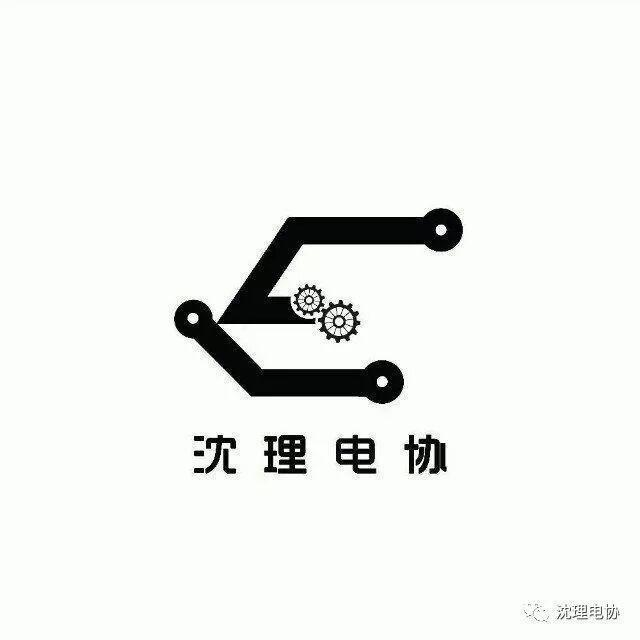
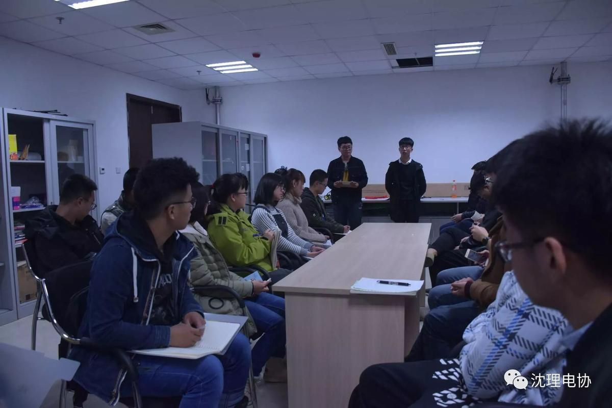
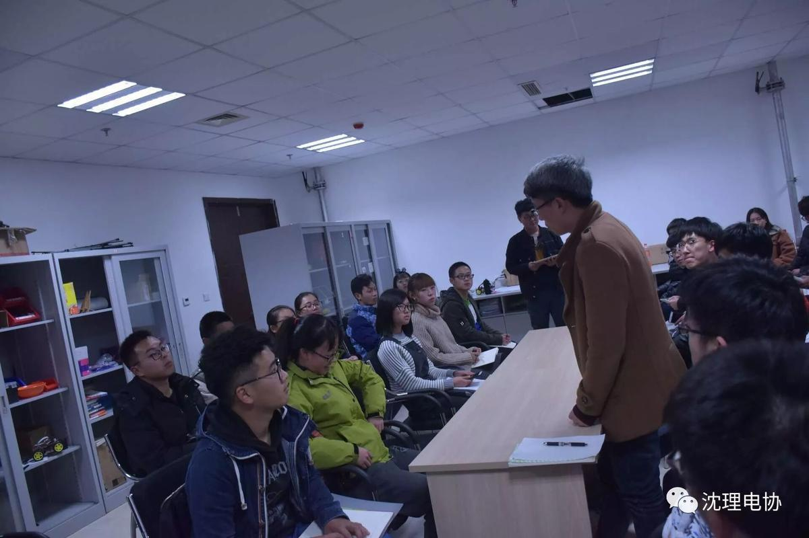
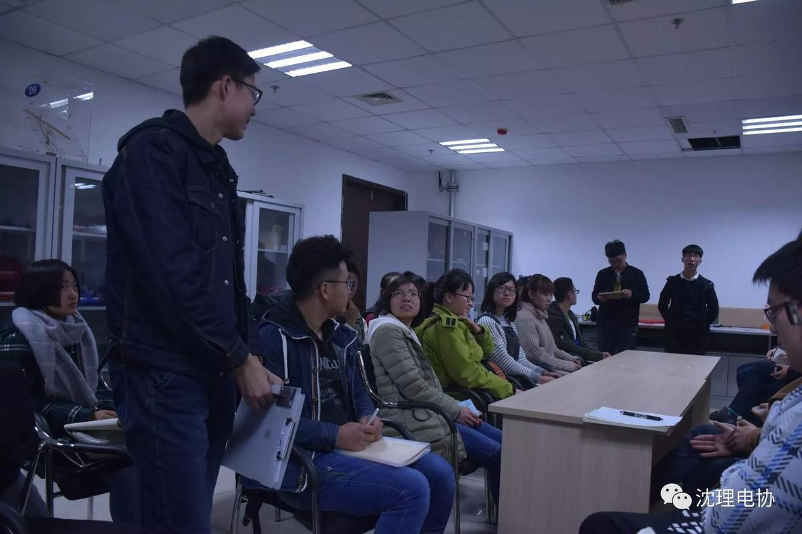
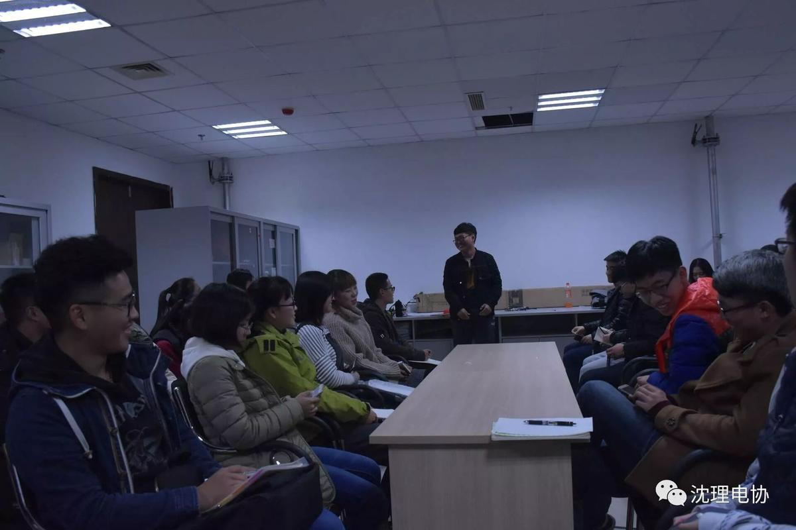

沈理电协，我们从这里开始。。。



今天（11月8日）晚，沈理电协行政部2017级萌新第一例会在文体中心召开。
电协就是这样。。。
首先，
董辉学长和王枭学长，
介绍了我们电协的大致组成，
并且初步让我们了解
什么是电协人。。。

电协人是这样。。
然后，
各部门学长进行自我介绍
让我们电协的新血液
更加了解电协
了解这帮哥哥姐姐们

部门你需要了解。。。
其次，
各部门新干事，
提出了自己对部门的了解
以及对日后工作的设想

电协从这里开始！
最后，
在大家的欢笑声中
结束了本次例会
我们的电协生涯
也将从此开始
你好！
电协！
加油！少年！

图片|电协信息部—刘舒宇
编辑|电协信息部—王同远
想要了解更多，欢迎关注我们AMBITION战队微博呦！